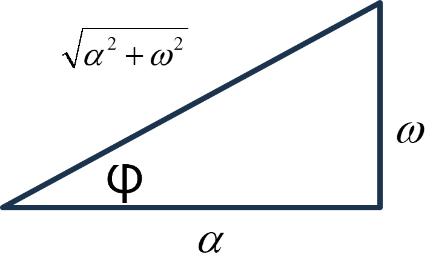
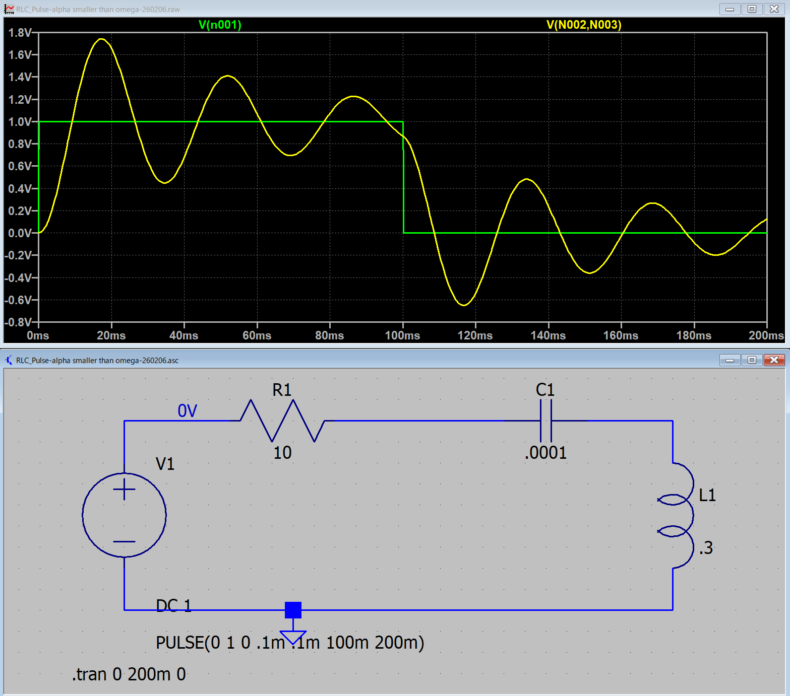
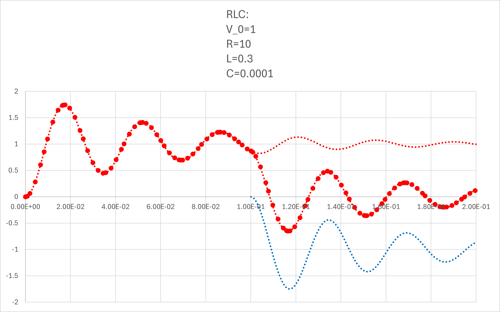

１６ー２．電圧で考えてみる（RLC回路）: α < ω0
コンデンサの電圧，です．
α < ω0
0 < t < t0
\(\Large I_1(t) = \displaystyle \frac{V_0}{ \omega L} \cdot e^{- \alpha t} \cdot sin ( \omega t)\)
t0 < t
\(\Large I_2(t) = \displaystyle \frac{V_0}{ \omega L} \left[ e^{- \alpha t} \cdot sin ( \omega t) - e^{- \alpha (t-t_0)} \cdot sin \ \omega (t-t_0) \right] \)
\(\Large \omega = \sqrt{ \omega_0^2 - \alpha^2}\)
VC ： コンデンサの電圧
0 < t < t0
\(\Large I_1(t) = \displaystyle \frac{V_0}{ \omega L} \ e^{- \alpha t} \cdot \ sin ( \omega t)\)
\(\Large V_C = \displaystyle \frac{1}{C} \int I_1(t) \ dt \)
\(\Large = \displaystyle \frac{V_0}{ \omega LC} \int \ e^{- \alpha t} \cdot \ sin ( \omega t) \ dt \)
積分公式から，
\(\Large = \displaystyle \frac{V_0}{ \omega LC} \frac{1}{\alpha^2 + \omega^2}\cdot e^{- \alpha t} \cdot \{- \alpha \ sin ( \omega t) - \omega \cdot \ cos ( \omega t)\} + D\)
と定数項がつきます．
\(\Large = \displaystyle \frac{V_0}{ \omega LC} \frac{-1}{\alpha^2 + \omega^2}\cdot e^{- \alpha t} \cdot \{ \alpha \ sin ( \omega t) + \omega \cdot \ cos ( \omega t)\} +D \)
初期条件として，
\(\Large t =0 : V_C(0)=0 \)
\(\Large V_C(0) = \displaystyle \frac{V_0}{ \omega LC} \frac{-1}{\alpha^2 + \omega^2}\cdot e^{- \alpha \cdot 0} \cdot \{ \alpha \ sin ( \omega \cdot 0) + \omega \cdot \ cos ( \omega \cdot 0)\} +D \)
\(\Large = \displaystyle \frac{V_0}{ LC} \frac{-1}{\alpha^2 + \omega^2}\ +D \)
\(\Large D = \displaystyle \frac{V_0}{ LC} \frac{1}{\alpha^2 + \omega^2} \)
と定数項を求めることができました．
ここで，
\(\Large sin \ (x +y) = sin \ x \cdot cos \ y + cos \ x \cdot sin \ y \)
から，

\(\Large V_C = \displaystyle \frac{V_0}{ \omega LC} \frac{-1}{\alpha^2 + \omega^2}\cdot e^{- \alpha t} \cdot \{ \alpha \ sin ( \omega t) + \omega \cdot \ cos ( \omega t)\} + \frac{V_0}{ LC} \frac{1}{\alpha^2 + \omega^2}\)
\(\Large = \displaystyle \frac{V_0}{ \omega LC} \frac{-1}{\alpha^2 + \omega^2} \cdot e^{- \alpha t} \cdot \ \sqrt{ \alpha^2 + \omega^2} \cdot\{ cos \ \varphi \cdot \ sin ( \omega t) -sin \ \varphi \cdot \ cos ( \omega t)\} + \frac{V_0}{ LC} \frac{1}{\alpha^2 + \omega^2}\)
\(\Large = \displaystyle \frac{V_0}{ \omega LC} \frac{-1}{\sqrt{\alpha^2 + \omega^2}} \cdot e^{- \alpha t} \cdot sin ( \omega t + \varphi) + \frac{V_0}{ LC} \frac{1}{\alpha^2 + \omega^2} \)
\(\Large = \displaystyle \frac{V_0}{ \omega LC} \frac{-1}{\sqrt{\alpha^2 + \omega^2}} \cdot e^{- \alpha t} \cdot sin ( \omega t + \varphi) + \frac{V_0}{ LC} \frac{1}{\alpha^2 + \omega^2} \)
\(\Large\hspace{40pt} ( tan \varphi = \frac{\omega}{\alpha} )\)
となります．
t0 < t
\(\Large I_2(t) = \displaystyle \frac{V_0}{ \omega L} \left[ e^{- \alpha t} \cdot sin ( \omega t) - e^{- \alpha (t-t_0)} \cdot sin \ \omega (t-t_0) \right] \)
\(\Large V_C = \displaystyle \frac{1}{C} \int I_2(t) \ dt \)
この積分において，第一項は，0<t<t0と同じ計算になります．．
第二項は，T=t-t0，と置けば同じ積分となるので，
\(\Large V_C = \displaystyle \frac{V_0}{ \omega LC} \frac{1}{\alpha^2 + \omega^2}\cdot \left[ e^{- \alpha t} \cdot \{- \alpha \ sin ( \omega t) - \omega \cdot \ cos ( \omega t)\} - e^{- \alpha (t-t_0)} \cdot \{- \alpha \ sin \ \omega (t-t_0) - \omega \cdot \ cos \ \omega (t-t_0)\}\right] + D\)
となります．初期条件は，
\(\Large t = t_0 : \)
\(\Large V_C(t_0) = \displaystyle \frac{V_0}{ \omega LC} \frac{-1}{\alpha^2 + \omega^2}\cdot \left[ e^{- \alpha t_0} \cdot \{- \alpha \ sin ( \omega t_0) - \omega \cdot \ cos ( \omega t_0)\} - \omega \right]+ D\)
\(\Large = \displaystyle \frac{V_0}{ \omega LC} \frac{1}{\alpha^2 + \omega^2}\cdot \left[ \omega -e^{- \alpha t_0} \cdot \{ \alpha \ sin ( \omega t_0) + \omega \cdot \ cos ( \omega t_0)\} \right] + D\)
右辺第一項は，まさしく，0<t<t0における，t=t0の値となります．念のため計算すると，
\(\Large V_C = \displaystyle \frac{V_0}{ \omega LC} \frac{-1}{\alpha^2 + \omega^2}\cdot e^{- \alpha t} \cdot \{ \alpha \ sin ( \omega t) + \omega \cdot \ cos ( \omega t)\} + \frac{V_0}{ LC} \frac{1}{\alpha^2 + \omega^2}\)
\(\Large V_C(t_0) = \displaystyle \frac{V_0}{ \omega LC} \frac{-1}{\alpha^2 + \omega^2}\cdot e^{- \alpha t_0} \cdot \{ \alpha \ sin ( \omega t_0) + \omega \cdot \ cos ( \omega t_0)\} + \frac{V_0}{ LC} \frac{1}{\alpha^2 + \omega^2}\)
\(\Large = \displaystyle \frac{V_0}{ LC} \frac{1}{\alpha^2 + \omega^2}\cdot \left[ \omega - e^{- \alpha t_0} \cdot \{ \alpha \ sin ( \omega t_0) + \omega \cdot \ cos ( \omega t_0)\} \right]\)
となり，D=0，となります．したがって，
\(\Large V_C = \displaystyle \frac{V_0}{ \omega LC} \frac{-1}{\alpha^2 + \omega^2}\cdot \left[ e^{- \alpha t} \cdot \{ \alpha \ sin ( \omega t) + \omega \cdot \ cos ( \omega t)\} - e^{- \alpha (t-t_0)} \cdot \{ \alpha \ sin \ \omega (t-t_0) + \omega \cdot \ cos \ \omega (t-t_0)\}\right] \)
\(\Large = \displaystyle \frac{V_0}{ \omega LC} \frac{-1}{\sqrt{\alpha^2 + \omega^2}} \cdot \left[ e^{- \alpha t} \cdot sin ( \omega t + \varphi) - e^{- \alpha (t-t_0)} \cdot sin \{ \omega (t-t_0) + \varphi \} \right] \)
\(\Large\hspace{40pt} (tan \varphi = \frac{\omega}{\alpha}) \)
もしくは＋－の定数項を加えると，
\(\Large = \displaystyle \frac{V_0}{ \omega LC} \frac{-1}{\sqrt{\alpha^2 + \omega^2}} \cdot \left[ e^{- \alpha t} \cdot sin ( \omega t + \varphi) + \frac{V_0}{ LC} \frac{1}{\alpha^2 + \omega^2}- \left\{e^{- \alpha (t-t_0)} \cdot sin \{ \omega (t-t_0) + \varphi \} + \frac{V_0}{ LC} \frac{1}{\alpha^2 + \omega^2}\right\} \right] \)
となり，ステップオフの場合は，
第一項 ： 最初のステップオンの際の波形（たとえば，0→1）
第二項 ： t=t0，において，1→0，のように，逆のステップを入力した波形
なので，ステップオフ後，の波形は，
ステップオンの波形の残り ＋ マイナスのステップの波形 の和
となるわけです．
実際に，LTspice，でシミュレートしてみましょう．ここ，と同様に，
V0 : 1 V
R : 10 Ω
L : 0.3 H
C : 0.0001 F
とすると，
\(\Large \displaystyle \omega_0 = \frac{1}{\sqrt{0.3 \times 0.0001} } = 182.57 \ (1/s) \)
\(\Large \displaystyle \alpha \equiv \frac{10}{2 \times 0.3} = 16.67 \ (1/s) \)
となり，α < ω0，の条件となります．
\(\Large \displaystyle \omega = \sqrt{ \omega_0^2 - \alpha^2 } = 181.81 (rad/s) = 28.93 Hz \)
となり，LTspiceでシミュレートすると，

となります．式と当てはめてみると，

と一致することがわかります（全領域で）．
青点線，が右辺第二項，で右辺第一項との和が，シミュレーションと一致することがわかります．
次ページから，α > ω0における電圧を考えてみましょう．